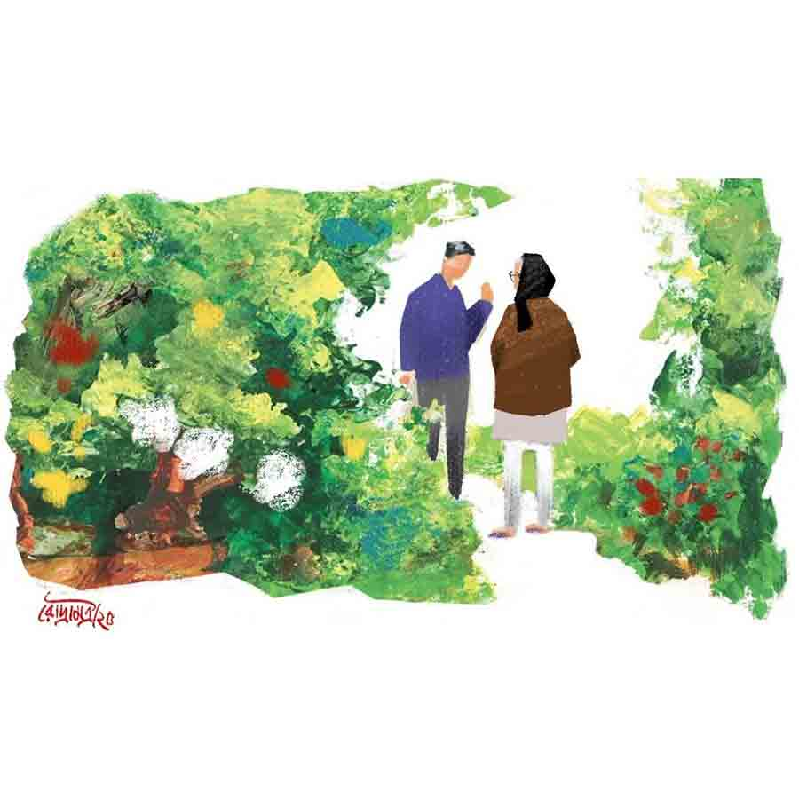

পিঠে
রাজেশ গঙ্গোপাধ্যায়
সকালবেলা ব্যালকনির রোদে চা নিয়ে বসেছে শৌভিক। সামনে খবরের কাগজটা খোলা। রান্নাঘর থেকে কমলিনীর গলা শোনা গেল, “আজ আমার বেরোনো নেই। ডুব মারতে পারবে কি?”
শৌভিকের মনে হল, কমলিনী কি মন পড়তে পারে! না হলে…
“কারণ?” শৌভিক কায়দা করে জানতে চাইল।
“ও-বাড়ি যাব ভাবছি।”
‘ও-বাড়ি’ টার্মটা সচরাচর কমলিনীদের বাড়ি বোঝাতেই ব্যবহৃত হয়। শৌভিকের উৎসাহ নিবে গেল এক ফুঁয়ে।
“নাহ্, আজ হয়ে উঠবে না।”
“আমি জানতাম।”
“কী জানতে?”
“তোমার হবে না।”
এই কথোপকথনে শৌভিকের চায়ের মৌজটাই চলে গেল, খবরের কাগজটাও পড়া হয়ে উঠল না। রোদ্দুরটাও বেঁকে গেছে। মনের ভেতর থেকে একটা ‘ধুস!’ বেরিয়ে আসতে চাইলেও বেরোতে দিল না ও। টেবিলে চায়ের কাপটা রেখে গিজ়ার চালিয়ে শেভিং কিটস বার করল। ব্যালকনিতে বেতের চেয়ারটায় রাখা খবরের কাগজে এসে বসেছে কয়েকটা চড়ুই।
“সত্যিই তোমার হবে না?” কমলিনী যখন এ কথা জিজ্ঞেস করছে, শৌভিক তত ক্ষণে বাথরুমে ঢুকে গিয়ে কল খুলে দিয়েছে। প্লাস্টিকের বালতিতে জল পড়ার প্রখর আওয়াজ ঢেকে দিতে চাইছে কথাদের। তবুও শোনা গেল প্রশ্নটা। কিন্তু জুতসই বাহানা প্রস্তুত হয়ে যাওয়ায় উত্তর দেওয়ার পরোয়া করল না শৌভিক। অন্তত এ ভাবে তো বিরক্তিটা জেগে থাকুক, না-ই বা চেনা গেল তাকে।
চান করতে করতেই শৌভিক রোজ ঠিক করে ফেলে, সে দিন কোন শার্টটা পরবে। সঙ্গে ম্যাচিং ট্রাউজ়ার্সও। সেজেগুজে অফিস যেতে বেশ পছন্দ করে শৌভিক। এ নিয়ে কমলিনী রোজ আওয়াজ দেয় ওকে। শৌভিক ভাব দেখায় যা হোক একটা হলেই হয়, কিন্তু ব্যাপারটা যে তেমন নয়, এটা ধরা পড়ে গেলেই ও বিরক্ত হয়। ঘরে ঢুকে দেখল, ডিপ পার্পল শার্টটা আর স্টিল গ্রে ট্রাউজ়ার্সটা রাখা বিছানার ওপর। শৌভিক এত অবাক হয়ে গেল যে বলার নয়। আজ সকাল থেকে কী ভাবে যে মিলে যাচ্ছে সব কিছু! ও কিছু না বলে খুশির ভাবটা গোপন রেখে চটপট পোশাক পরে নেয়।
ডাইনিং টেবিলে যখন গিয়ে বসছে, তখন দেখল খাবার বেড়ে দেওয়া নেই। কমলিনী চুপ করে দাঁড়িয়ে আছে সামনে। আলতো একটা হাসি লেগে রয়েছে ওর মুখে। শৌভিক আর না পেরে জিজ্ঞেস করেই ফেলল, “কী ব্যাপার!”
“আজ অফিস ডুব মেরে দাও।”
“কী যা-তা বলছ! অফিসে প্রচুর কাজ…”
“জানি তো! তবু আজ ডুব মারাই যায়!”
“আরে! বেরোনোর সময় কী শুরু করলে!”
“এই স্যান্ডউইচটা খেয়ে নাও। আমি চটপট রেডি হয়ে নিচ্ছি।”
“মানেটা কী!”
কমলিনী তত ক্ষণে বাথরুমে। তার পরই প্লাস্টিকের বালতিতে জল পড়ার প্রখর আওয়াজ। শৌভিক স্পষ্ট বুঝল, কমলিনী শুনতে পেয়েও উত্তর দিল না। একটা সাসপেন্স স্টোরির মতো সকালটাকে মুড়ে ফেলে কমলিনী আজ কী প্রমাণ করায় মেতেছে কে জানে! আজ ও-ই বা বেরোয়নি কেন!
“কোথায় যাব?” শৌভিক স্টিয়ারিংয়ে বসে জানতে চাইল।
“বেহালা,” কমলিনীর ছোট্ট উত্তর।
শৌভিক যেন বিস্ময়ে ফেটেই পড়বে। ‘ও-বাড়ি’ বলতে তা হলে কখনও কখনও বেহালার বাড়িও বোঝায়! কিন্তু ওর মনে হল, আনন্দের বহিঃপ্রকাশ দেখানো যাবে না। ভিতরে উচ্ছ্বাসের নদীটাকে দিব্যি বইতে দিয়ে নির্বিকার মুখে শৌভিক গাড়ি স্টার্ট দিল।
মা ওদের আসার কথা জানত। বাবাও। মিনুদি গালভরা হেসে কমলিনীকে বলল, “বৌদি এসো। দাদা এসো।”
শৌভিক তখনও কিছু বুঝে উঠতে পারেনি। কমলিনীর এই চমক দেওয়ার স্বভাবটা সব সময় ভাল না লাগলেও, আজ কিন্তু অনাবিল আনন্দ হচ্ছে। শৌভিক মনে মনে বলল, ‘থ্যাঙ্কস কমল।’
“বাবা কোথায়, মা?”
“শীতের সকালে তোর বাবার প্রিয় জায়গায়,” মা হেসে বলল।
শৌভিক বুঝে গেল, বাবা ছাদে। ও সিঁড়ি দিয়ে কয়েক দৌড়ে ছাদে গিয়ে দেখল, মিঠে রোদ গায়ে মেখে বাবা টবের গাছগুলোর পরিচর্যায় ব্যস্ত। অপূর্ব ডালিয়া হয়েছে টবগুলোয়। এ ছাড়া চন্দ্রমল্লিকা, অনেক ধরনের গাঁদা, ডেইজ়ি, কারনেশন, অ্যাস্টর, সূর্যমুখীও রয়েছে দেদার। অসাধারণ দেখাচ্ছে ছাদটা। আর হনুমানের উৎপাত থেকে প্রিয় গাছদের বাঁচানোর জন্য বাবা কী সুন্দর একটা খাঁচা তৈরি করেছে পুরো ছাদটায়! ঝলমলে রোদে ভেসে যাচ্ছে বাবার সাধের বাগান। তার মধ্যে চকলেট কালারের জ্যাকেট ও কালো মাফলারে বাবাকে যেন এক ডিভাইন গার্ডেনার মনে হচ্ছে। ফুলগাছগুলোর রূপে মগ্ন হয়ে পড়েছে শৌভিক।
“কখন এলি শুভ? বৌমাও এসেছে তো?”
দুটো প্রশ্নের উত্তর এক বার ঘাড় নাড়িয়েই দেওয়া যায়। শৌভিকও তা-ই করল।
“নতুন কসমসগুলো কোত্থেকে এনেছ, বাবা?”
সকালবেলা ব্যালকনির রোদে চা নিয়ে বসেছে শৌভিক। সামনে খবরের কাগজটা খোলা। রান্নাঘর থেকে কমলিনীর গলা শোনা গেল, “আজ আমার বেরোনো নেই। ডুব মারতে পারবে কি?”
শৌভিকের মনে হল, কমলিনী কি মন পড়তে পারে! না হলে…
“কারণ?” শৌভিক কায়দা করে জানতে চাইল।
“ও-বাড়ি যাব ভাবছি।”
‘ও-বাড়ি’ টার্মটা সচরাচর কমলিনীদের বাড়ি বোঝাতেই ব্যবহৃত হয়। শৌভিকের উৎসাহ নিবে গেল এক ফুঁয়ে।
“নাহ্, আজ হয়ে উঠবে না।”
“আমি জানতাম।”
“কী জানতে?”
“তোমার হবে না।”
এই কথোপকথনে শৌভিকের চায়ের মৌজটাই চলে গেল, খবরের কাগজটাও পড়া হয়ে উঠল না। রোদ্দুরটাও বেঁকে গেছে। মনের ভেতর থেকে একটা ‘ধুস!’ বেরিয়ে আসতে চাইলেও বেরোতে দিল না ও। টেবিলে চায়ের কাপটা রেখে গিজ়ার চালিয়ে শেভিং কিটস বার করল। ব্যালকনিতে বেতের চেয়ারটায় রাখা খবরের কাগজে এসে বসেছে কয়েকটা চড়ুই।
“সত্যিই তোমার হবে না?” কমলিনী যখন এ কথা জিজ্ঞেস করছে, শৌভিক তত ক্ষণে বাথরুমে ঢুকে গিয়ে কল খুলে দিয়েছে। প্লাস্টিকের বালতিতে জল পড়ার প্রখর আওয়াজ ঢেকে দিতে চাইছে কথাদের। তবুও শোনা গেল প্রশ্নটা। কিন্তু জুতসই বাহানা প্রস্তুত হয়ে যাওয়ায় উত্তর দেওয়ার পরোয়া করল না শৌভিক। অন্তত এ ভাবে তো বিরক্তিটা জেগে থাকুক, না-ই বা চেনা গেল তাকে।
চান করতে করতেই শৌভিক রোজ ঠিক করে ফেলে, সে দিন কোন শার্টটা পরবে। সঙ্গে ম্যাচিং ট্রাউজ়ার্সও। সেজেগুজে অফিস যেতে বেশ পছন্দ করে শৌভিক। এ নিয়ে কমলিনী রোজ আওয়াজ দেয় ওকে। শৌভিক ভাব দেখায় যা হোক একটা হলেই হয়, কিন্তু ব্যাপারটা যে তেমন নয়, এটা ধরা পড়ে গেলেই ও বিরক্ত হয়। ঘরে ঢুকে দেখল, ডিপ পার্পল শার্টটা আর স্টিল গ্রে ট্রাউজ়ার্সটা রাখা বিছানার ওপর। শৌভিক এত অবাক হয়ে গেল যে বলার নয়। আজ সকাল থেকে কী ভাবে যে মিলে যাচ্ছে সব কিছু! ও কিছু না বলে খুশির ভাবটা গোপন রেখে চটপট পোশাক পরে নেয়।
ডাইনিং টেবিলে যখন গিয়ে বসছে, তখন দেখল খাবার বেড়ে দেওয়া নেই। কমলিনী চুপ করে দাঁড়িয়ে আছে সামনে। আলতো একটা হাসি লেগে রয়েছে ওর মুখে। শৌভিক আর না পেরে জিজ্ঞেস করেই ফেলল, “কী ব্যাপার!”
“আজ অফিস ডুব মেরে দাও।”
“কী যা-তা বলছ! অফিসে প্রচুর কাজ…”
“জানি তো! তবু আজ ডুব মারাই যায়!”
“আরে! বেরোনোর সময় কী শুরু করলে!”
“এই স্যান্ডউইচটা খেয়ে নাও। আমি চটপট রেডি হয়ে নিচ্ছি।”
“মানেটা কী!”
কমলিনী তত ক্ষণে বাথরুমে। তার পরই প্লাস্টিকের বালতিতে জল পড়ার প্রখর আওয়াজ। শৌভিক স্পষ্ট বুঝল, কমলিনী শুনতে পেয়েও উত্তর দিল না। একটা সাসপেন্স স্টোরির মতো সকালটাকে মুড়ে ফেলে কমলিনী আজ কী প্রমাণ করায় মেতেছে কে জানে! আজ ও-ই বা বেরোয়নি কেন!
“কোথায় যাব?” শৌভিক স্টিয়ারিংয়ে বসে জানতে চাইল।
“বেহালা,” কমলিনীর ছোট্ট উত্তর।
শৌভিক যেন বিস্ময়ে ফেটেই পড়বে। ‘ও-বাড়ি’ বলতে তা হলে কখনও কখনও বেহালার বাড়িও বোঝায়! কিন্তু ওর মনে হল, আনন্দের বহিঃপ্রকাশ দেখানো যাবে না। ভিতরে উচ্ছ্বাসের নদীটাকে দিব্যি বইতে দিয়ে নির্বিকার মুখে শৌভিক গাড়ি স্টার্ট দিল।
মা ওদের আসার কথা জানত। বাবাও। মিনুদি গালভরা হেসে কমলিনীকে বলল, “বৌদি এসো। দাদা এসো।”
শৌভিক তখনও কিছু বুঝে উঠতে পারেনি। কমলিনীর এই চমক দেওয়ার স্বভাবটা সব সময় ভাল না লাগলেও, আজ কিন্তু অনাবিল আনন্দ হচ্ছে। শৌভিক মনে মনে বলল, ‘থ্যাঙ্কস কমল।’
“বাবা কোথায়, মা?”
“শীতের সকালে তোর বাবার প্রিয় জায়গায়,” মা হেসে বলল।
শৌভিক বুঝে গেল, বাবা ছাদে। ও সিঁড়ি দিয়ে কয়েক দৌড়ে ছাদে গিয়ে দেখল, মিঠে রোদ গায়ে মেখে বাবা টবের গাছগুলোর পরিচর্যায় ব্যস্ত। অপূর্ব ডালিয়া হয়েছে টবগুলোয়। এ ছাড়া চন্দ্রমল্লিকা, অনেক ধরনের গাঁদা, ডেইজ়ি, কারনেশন, অ্যাস্টর, সূর্যমুখীও রয়েছে দেদার। অসাধারণ দেখাচ্ছে ছাদটা। আর হনুমানের উৎপাত থেকে প্রিয় গাছদের বাঁচানোর জন্য বাবা কী সুন্দর একটা খাঁচা তৈরি করেছে পুরো ছাদটায়! ঝলমলে রোদে ভেসে যাচ্ছে বাবার সাধের বাগান। তার মধ্যে চকলেট কালারের জ্যাকেট ও কালো মাফলারে বাবাকে যেন এক ডিভাইন গার্ডেনার মনে হচ্ছে। ফুলগাছগুলোর রূপে মগ্ন হয়ে পড়েছে শৌভিক।
“কখন এলি শুভ? বৌমাও এসেছে তো?”
দুটো প্রশ্নের উত্তর এক বার ঘাড় নাড়িয়েই দেওয়া যায়। শৌভিকও তা-ই করল।
“নতুন কসমসগুলো কোত্থেকে এনেছ, বাবা?”
“নেপালগঞ্জের হাট। এক জন এনে দিয়েছে।”
“দারুণ!”
ছেলের প্রশংসা তারিয়ে তারিয়ে উপভোগ করছে বয়স্ক মানুষটা। ভাঙাচোরা মুখটা ঝকঝকে হয়ে উঠেছে। শৌভিক পকেট থেকে মোবাইল বার করে ছবি তুলতে লাগল। বাবাকে ফ্রেমে রেখেই ছবি উঠল একের পর এক। এর পর গাছ সংক্রান্ত কথাবার্তায় ডুবে গেল বাবা ও ছেলে।
“আর কত ক্ষণ থাকবে বাবা? নীচে যাবে না?”
“হ্যাঁ চল। ও দিকে তো আজ বিরাট প্রোগ্রাম।”
শৌভিক ঠিক বুঝতে পারল না, বাবা কী বোঝাতে চাইল। নীচে এসে দেখল, কমলিনী মায়ের একটা শাড়ি পরে নিয়েছে। মা, কমল ও মিনুদি মিলে জোরকদমে পিঠে বানানো চলছে। সমস্ত কার্যকলাপের ভিডিয়ো করা হচ্ছে।
বাবার মুখের দিকে তাকিয়ে শৌভিক বুঝতে পারল, বাবার কাছে এই ঘটনা অপ্রত্যাশিত নয়। নারকেল কুরোচ্ছে মিনুদি, প্যাকেট থেকে চালের গুঁড়ো ঢালছে কমলিনী, মা গুড় জ্বাল দিচ্ছে। এক স্বর্গীয় গন্ধে ভরে গেছে ঘরদোর। পায়েস তৈরি হয়ে গেছে। এখন পাটিসাপটার প্রস্তুতি চলছে। এর পর নাকি পুলিপিঠেও হবে। এ তো বিশাল কর্মযজ্ঞ!
“বহু বছর পর পৌষ সংক্রান্তি ম ম করে উঠল যেন!” বাবার কথায় রহস্যের সমাধান হয়ে গেল। তাই তো! আজ সরকারি স্কুলগুলোয় মকর সংক্রান্তির ছুটি। কিন্তু সরকারি দফতরগুলোয় নয়। শৌভিকের ভাবনার ঘোর ছিঁড়ে গেল বাবার কথায়, “বৌমা এ দিনটাকে স্পেশাল করে তুলবে বলে তোর মায়ের সঙ্গে কত প্ল্যান করছে আজ ক’দিন যাবৎ। কাল স্কুল-ফেরত এসে চালের গুঁড়ো, গুড়, নারকেল সব দিয়ে গেছে।”
শৌভিক বোকার মতো হাসল। ও যে কিছুই জানে না, এটা প্রকাশ করতে লজ্জা পেল।
“তোকে সারপ্রাইজ় দেওয়াই তো শাশুড়ি-বৌমার প্ল্যান!” বাবা হেসে ফেলল।
“এ বার এসো তোমরা,” মা যখন ডাকল, মনে হল বাবা এই মুহূর্তের জন্যই অপেক্ষা করছিল।
“চল শুভ, আজ ভাল করে পিঠে-পায়েস খাই!” বোঝাই যাচ্ছে বাবার আর তর সইছে না। শৌভিকের এক বার বলতে ইচ্ছে করল, “তোমার এখন শুগার কত, বাবা?” কিন্তু বলল না। আজকের দিনটায় শিশুর মতো বাবার মাতোয়ারা হয়ে ওঠাটা থাক না কিছুটা সময়। শুগারের জুজু আজ হুস হয়ে যাক।
টেবিলে সুন্দর করে সাজানো রয়েছে গুড়ের পায়েসের বাটি, পাটিসাপটা, পুলিপিঠে, চিতই পিঠেও। কমলিনী শ্বশুরমশাইকে বাটি এগিয়ে দিচ্ছে, শৌভিককেও দিল। তার পর শাশুড়ি, ও আর মিনুদিও নিয়ে বসল। সম্পূর্ণ ব্যাপারটার চলমান ছবি রয়ে যাচ্ছে। পালাজ়ো, থ্রি-কোয়ার্টার, নাইটির ঘেরাটোপ থেকে বেরিয়ে আজ ছাপা শাড়িতে কমলকে একেবারে অন্য রকম দেখাচ্ছে।
“বৌমা আজ আমাদের অবাক করে দিল!” এক মুখ হাসিতে মা বলে উঠল। মিনুদিও হাসতে হাসতে জোরে মাথা ঝাঁকিয়ে মায়ের কথায় সায় দিল।
“না মা, এ ভাবে বলবেন না। আপনি হাতে ধরে শিখিয়ে দিয়েছেন বলেই তো এ সব সম্ভব হল। এ বার দেখুন শেখায় ভুল রয়ে গেল কতটা?” কমলিনী গদগদ হয়ে বলল।
বাবা ততক্ষণে কয়েক কামড়ে দুটো পাটিসাপটা সাবাড় করে পায়েসের বাটি টেনে নিয়েছে।
“ওহ্ বৌমা! মকর সংক্রান্তি কেন যে রোজ হয় না!” বাবার কথায় সবাই হেসে ফেলল।
“শুভ, কিছু বলছিস না যে?” বাবার কথায় শৌভিক মাথা নেড়ে বলল, “ভালই তো।”
মিনুদি বলল, “বৌদি, এ বার এক দিন নারকেল নাড়ু করলে হয় না?”
“আমিও ঠিক এটাই ভাবছিলাম, মিনুদি,” কমলিনী বলল, “কিন্তু গুড়ের পাকটা ঠিক না হলে নাড়ু হওয়া মুশকিল। তাই না মা?”
“সব হয়ে যাবে বৌমা। তোমার ইচ্ছেশক্তিই তোমাকে দিয়ে করিয়ে নেবে...” শাশুড়ি বলল।
সন্ধেবেলা যখন শৌভিকের গাড়ি ওদের গলিটা ছাড়িয়ে বড় রাস্তায় পড়ল, তখনও পিঠে-পায়েসের স্বাদ মুখে লেগে আছে। বাবা, মা, মিনুদি— তিন জনেই বাড়ির বাইরে এসে দাঁড়িয়েছিল। আজ কারও মুখেই অন্যান্য দিনের মতো বিষণ্ণতার ছায়ালেপে ছিল না, যা শৌভিকের মনখারাপ করে দেয়, নিজের উপর এক অক্ষম ব্যর্থতাবোধ তীব্র হয়ে ওঠে প্রতি বার।
আচমকা কোনও কারণ ছাড়াই কমলিনী এক দিন জানিয়েছিল, বালিগঞ্জ সার্কুলার রোডে ওর এক কোলিগ খুব কমে একটা থ্রি-বিএইচকে ফ্ল্যাট ছেড়ে দিচ্ছে। ও এটা নিতে চায়। কমলিনী পারমিশন চায়নি, জাস্ট জানিয়েছিল। শৌভিক অবাক হয়ে জিজ্ঞেস করেছিল, “কেন?”
কমলিনী উত্তর দিতে স্বাচ্ছন্দ্য বোধ করেনি, তবুও বলেছিল, “আমাদের আর একটা প্রপার্টিহবে। ভাল এলাকায় একটা ফ্ল্যাট থাকলে ক্ষতি তো কিছু নেই।”
শৌভিকের কিছু বলার ছিল না। খারাপ লাগাটা বোঝাতে পেরেছিল কি না জানে না, কিন্তু কমলিনী ব্যাপারটা করেই ছেড়েছিল।
বাবা-মা যদিও বলেছিল, “ভালই হল, আমাদের আর একটা বাড়ি হল।” শৌভিক জানত, এই কথার মধ্যে বৃন্ত থেকে পৃথক হয়ে যাওয়ার আগে তীক্ষ্ণ যন্ত্রণাটা স্পষ্ট হয়ে ফুটে উঠেছিল। কমলিনীকে কিছু বোঝাতে চায়নি শৌভিক। সবাইকে সব কিছু বোঝানো যায় না। অফিস থেকে ফেরার সময় মাঝে মাঝেই বেহালা হয়ে আসত শৌভিক। আস্তে আস্তে স্বাভাবিক ভাবেই কমে আসতে লাগল এই যাতায়াতও। কমলিনীও যেত। একাই। শৌভিককে বলতও না সব সময়। কদমতলার বাড়িতে যেতেও কখনও শৌভিককে জোরাজুরি করত না কমলিনী। কারণ নতুন ঠিকানায় চলে আসার পর এক বার শ্বশুরবাড়িতে নিমন্ত্রণ ছিল শৌভিকের। কমলিনীও ছিল সঙ্গে।
কমলিনীর বাবা জিজ্ঞেস করেছিলেন, “তোমার বাবা-মা কেমন আছেন, শৌভিক?”
শৌভিক উত্তর দিয়েছিল, “খুবই ভাল আছেন। ওঁদের ভাল রাখাই তো একমাত্র ছেলে হিসেবে আমার লক্ষ্য।”
আর কেউ শৌভিককে কিছু জিজ্ঞেস করেনি। আশ্চর্য ভাবে কমলিনী শৌভিকের কথায় প্রচ্ছন্ন ঝাঁঝ নিয়ে কিচ্ছু জিজ্ঞেস করেনি।
একটা রোগা নদী আছে। দেখে মনে হয় হেঁটেই পেরিয়ে যাওয়া যাবে। কিন্তু পেরোনো হয়ে ওঠে না। শৌভিক ও কমলিনীর মাঝখানে থাকা এই নদীটার আসল উদ্দেশ্য দু’জনের কেউই কি জানে? বালিগঞ্জ সার্কুলার রোডে ঠিকানা বদল হওয়াটাই একমাত্র কারণ নয়। মাঝে মাঝে শৌভিকের মনে হয়, ওদের দাম্পত্য সম্পূর্ণ ভাবেই কমলিনীর ইচ্ছের ওপর নির্ভরশীল। তখনই ওর মনে হতে থাকে, ‘হেরে গেলাম’। অথচ দু’জনের সম্পর্ক মানে তো শুধু জেতা-হারা নয়।
শৌভিক কোথায় হারিয়ে গিয়েছিল জানে না। হঠাৎ ওর মনে হল, গাড়িতে ওঠার পর থেকে দু’জনের কেউই কোনও কথা বলেনি। শৌভিক বুঝে উঠতে পারছে না, কী বলা যায়। কমলিনীও চুপচাপ। শৌভিক আড়চোখে দেখল, কমলিনীর মুখে এক অমলিন তৃপ্তি লেপে রয়েছে। এ কিসের অভিব্যক্তি কে জানে!
“আজ পিঠে দিবস দারুণ কাটল!” শৌভিক এ কথা বলতে বলতেও মনে মনে ভাবছিল, ময়দা, সুজির পরতের ভিতর নারকেল, খোয়া ক্ষীরের পুর দিয়ে যে ভাবে পিঠে তৈরি হয়, জীবনটাও অনেকটা সে রকমই না!
“তোমার অফিসের কত কাজ বাকি রয়ে গেল!” কমলিনীর কথা শুনে শৌভিকের মনে হল, এ ভাবে কমলিনীর কুশন হয়েই হাজারো পিন বিঁধিয়ে নিতে হবে জীবনভর। তবু ওর এখন আর ততটা খারাপ লাগছে না।
“চলো, আজ রাতে বাইরে কোথাও ডিনার করি। অনেক দিন বাইরে খাইনি।”
“সারা দিন এত খাওয়া হল, তার পরও বাইরে ডিনার করতে হবে!” কমলিনীর কথায় হেসেফেলল শৌভিক।
লুকিং গ্লাসের হুক থেকে যে ঝুলন্ত পুতুলটা দুলছে, একটু বেশি বার দুলে উঠলেই ওর চোখদুটো বুজে যায়, ঠোঁটটা আরও চওড়া হয়ে হাসির আদল ফুটে ওঠে। আবার মিলিয়েও যায়। দেখতে দেখতে কমলিনীর মনে হচ্ছিল, আজ সারাটা দিন মুখে হাসি রেখে দেওয়ার জন্য ওকেও এ ভাবেই‘ফর নাথিং’ দুলে যেতে হল। শুধু পুতুলটাকে ঝাঁকুনি দিয়ে দোলাতে হয়, আর কমলিনী নিজেইদুলেছে এবং সবাইকে দুলিয়েও ছেড়েছে! যারা শুধু হাসিটাই দেখল, তাদের কারণ খোঁজার প্রয়োজন পড়েনি। এ বার কমলিনীর ঠোঁটে একটা আবছা হাসি ফুটে উঠল। শৌভিক ভাবল, ওরহাসির প্রত্যুত্তরেই…
খাবার ছুড়ে দেওয়ার জন্য যখন আঙুলগুলো এগিয়ে আসে, অ্যাকোরিয়ামের জলতলে ভেসে ওঠা মাছেদের কাছে বন্দিদশা ভুলে সেই আঙুলগুলোই মোক্ষ হয়ে ওঠে। কমলিনী এ বার সত্যিকারের হাসিটা আড়াল করতে মুখ ঘুরিয়ে বাইরের দিকে তাকালো। পোষা মাছগুলো আসলে যা দেখে, তাকেই সত্যি ভেবে নেয়!
রাতেই ফেসবুকে কমলিনীর টাইমলাইনে ফোটো আর ভিডিয়ো ক্লিপিংগুলো আপলোড করা হয়ে গেল। হ্যাশট্যাগ নামল ‘মকর সংক্রান্তি সেলিব্রেশন’। লাইক, শেয়ার, কমেন্টে উপছে নিউজ় ফিডের পাতা।
শৌভিক কমলিনীর ফেসবুক ফ্রেন্ড নয়!
ছবি: রৌদ্র মিত্র
(এই প্রতিবেদনটি আনন্দবাজার পত্রিকার মুদ্রিত সংস্করণ থেকে নেওয়া হয়েছে)